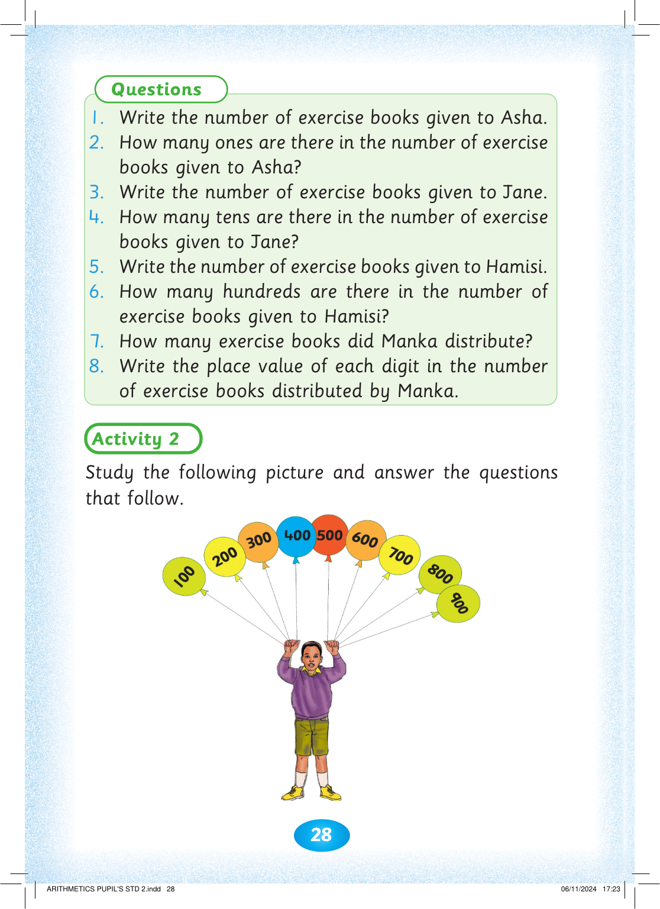
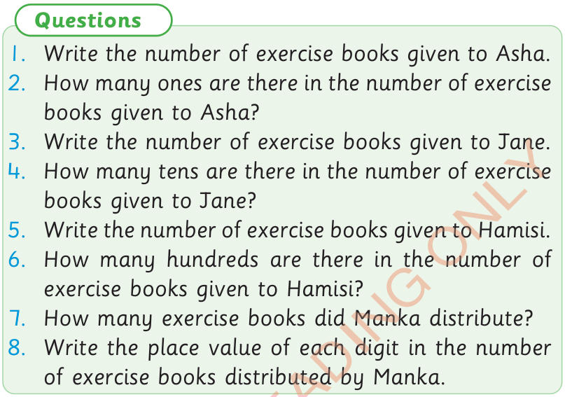
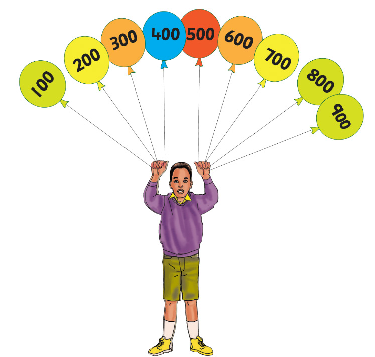

28



Questions

1. Write the number of exercise books given to Asha.

2. How many ones are there in the number of exercise books given to Asha?
3. Write the number of exercise books given to Jane.
4. How many tens are there in the number of exercise books given to Jane?
5. Write the number of exercise books given to Hamisi.
6. How many hundreds are there in the number of exercise books given to Hamisi?
7. How many exercise books did Manka distribute?
8. Write the place value of each digit in the number of exercise books distributed by Manka.
Activity 2
Study the following picture and answer the questions that follow.



ARITHMETICS PUPIL'S STD 2.indd 28
06/11/2024 17:23